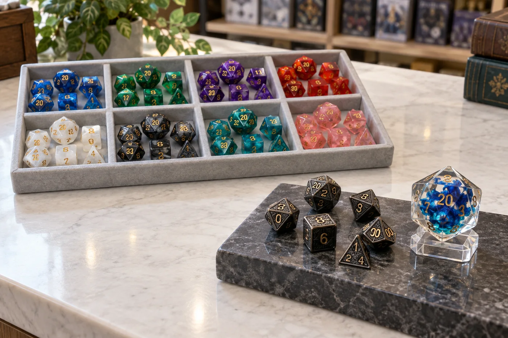

Game store buyers searching for RPG dice trends in 2026 need more than a list of attractive new products. They need to decide what deserves shelf space, how much to test, which customers a product serves, and when a supplier can replenish it. Recent tabletop announcements offer several useful signals: large convention activations, continuing investment in narrative-focused role-playing games, accessories designed for in-person play, stronger links to virtual tabletops, and high-visibility collectible dice.
These signals are useful for planning, but they are not a substitute for your own sales history. A product shown at a convention may draw attention without becoming a dependable seller in every region. Use the ideas below to shape a testable wholesale RPG dice assortment, then let your store's sell-through, margin, and customer questions guide the next order. If you are new to category planning, our bulk DND dice buying guide for game stores covers the fundamentals of SKU mix, MOQ, packaging, and reorders.
2026 RPG dice trends for game stores: the quick answer
A practical assortment has roles: everyday seven-piece dice sets for new and returning players; recognizable colors and fantasy themes for character-led purchases; a small premium or giftable selection; and optional D20-only or event products where the store has a use for them. For every new item, confirm the exact game compatibility, landed cost, package dimensions, MOQ, and restock path. A focused test is easier to evaluate than a broad order built from trend headlines.
What current tabletop announcements can tell a dice buyer
In 2026, major publishers and game makers have continued to invest in live events, new tabletop content, actual-play programming, accessories, and digital play. For example, Dungeons & Dragons scheduled a multi-floor D&D Tower at Gen Con, including a keynote, talks, live play, music, events, and merchandise. Daggerheart announced a multi-year content roadmap at Gen Con, with two major projects planned each year, additional accessories, and expanded virtual-tabletop support. These are concrete signs of ongoing product and community activity, though they do not tell an individual retailer what will sell through.
For a retailer, the useful question is not “Which announcement should I copy?” It is “What customer behavior could this create, and can I serve that behavior with a product I can explain and reorder?” The sections below translate each signal into a merchandising decision.
1. Conventions keep tabletop play visible and social
Convention programming brings players together around demos, panels, live games, creators, and new releases. The official D&D Gen Con 2026 schedule included its D&D Tower activation and an actual-play event, while Daggerheart used the convention for a roadmap presentation and live-play content. This is evidence of publisher investment in in-person community experiences. It is not a measured forecast for dice sales, but it gives local stores a useful merchandising prompt.
Connect dice to activities your store already runs. A weekly campaign night can use a beginner-friendly dice display near the table sign-up area. A convention weekend can support a limited, clearly priced selection of complete sets, D20 add-ons, and small gifts. A learn-to-play event can pair a seven-piece polyhedral set with a short guide that explains the common dice shapes. These products work best when staff can answer simple questions: how many dice are in the set, what each die is for, and whether the set fits the game being played.
Retail action: mark event-related sales separately from everyday sales. This helps distinguish a real repeatable category from a short-lived event spike. If you need a starting selection, compare the current wholesale dice catalog with your store's event calendar and ask suppliers for samples before ordering event quantities.
2. Narrative RPGs create new assortment questions
New and expanding role-playing games can bring new players, campaign settings, and accessory needs into a store. Daggerheart's official Gen Con announcement described a three-year rollout that includes adventures, expansions, settings, accessories, and digital releases. The announcement also listed a planned Foundry VTT collaboration, with initial modules expected in Q4 2026. That roadmap indicates continued development around both play content and the tools that support a campaign.
For a dice buyer, the lesson is to keep the shelf organized by customer need instead of assuming every RPG uses the same dice. Some players want a familiar polyhedral set that works across several games. Others may need a game-specific set, token, tracker, or accessory. Check the current official rules and product requirements before describing a dice set as compatible with a particular system. Avoid printing a game's name or logo on custom products unless you have permission to do so.
Consider a small “new campaign” area with neutral, game-agnostic polyhedral sets, a few distinctive colors, and clearly labeled related accessories. Make the compatibility description factual. If customers ask for a system-specific set that you do not stock, record the request; repeated requests are stronger evidence for a test than a passing social post. Stores developing an original branded product line can review our guide to custom RPG dice and the practical steps for planning dice for an RPG Kickstarter campaign.
3. Physical tables and virtual tabletops can coexist
Digital character tools and virtual tabletops make it easier for groups to play remotely, while publishers continue to announce physical accessories and in-person events. Daggerheart's 2026 roadmap, for instance, includes both planned physical accessories and VTT-related work. That combination is a reminder that buyers do not need to choose between “digital” and “physical” customers. Many groups move between online sessions, convention games, and in-person campaigns.
For merchandising, consider how physical dice fit into those routines: a travel set for a convention bag, a giftable boxed set for a new campaign, a spare set for a game master, or a visually distinctive set that is easy to identify at a shared table. A dice set is not automatically useful just because it looks premium; it should be comfortable to read, appropriate for the game, packaged well enough for its retail format, and priced for the buyer you intend to serve.
If your store's audience also uses online tools, connect your content and events to a useful digital resource, such as a free online dice roller, while keeping the physical product display available for customers who want a tactile set. That gives your website and store staff a natural way to discuss dice without suggesting that one format replaces the other.
4. Collectible and premium dice can serve as display anchors
Premium dice attract attention through materials, scale, finishing, internal effects, sculpted details, or presentation. Hasbro's 2026 lookbook announced Dungeons & Dragons Fizban's Fortune as a premium line of oversized D20 dice inspired by dragon imagery. This is a specific announced product line, not evidence that oversized dice will become a high-volume category for all stores. It does show that collectible dice can be presented as a distinct product concept rather than only as a standard play set.
Independent retailers can evaluate the same product role without copying protected art or branding. A premium shelf might include metal dice, sharp-edge resin, liquid-core styles, hollow designs, oversized D20s, or boxed presentation sets when those formats are actually available from the supplier. Display one sample if possible, explain the material and care requirements, and keep the standard resin sets visible as the accessible core. Use original themes such as elemental colorways, abstract runes, or store-owned artwork.
Before buying premium RPG dice, inspect a sample under the lighting used in your store. Check number contrast, finish consistency, edge feel, weight, packaging protection, and whether the item can be displayed without opening the retail box. For additional material-specific considerations, see the metal dice wholesale buying guide and our overview of custom dice packaging options.

A practical RPG dice assortment framework
Use product roles to avoid a shelf full of near-duplicates. The right mix depends on your customers, shelf space, purchasing budget, and supplier terms, so treat this framework as a decision aid rather than a universal ratio.
| Assortment role | Possible products | What to evaluate |
|---|---|---|
| Core play | Standard seven-piece polyhedral sets in a controlled range of colors | Readability, complete set contents, price point, and reliable reorders |
| Theme-led choice | Dragon, elemental, class-inspired, rune, or abstract fantasy designs | Distinct appearance, accurate product description, and enough contrast between SKUs |
| Premium display | Metal, sharp-edge resin, liquid-core, hollow, oversized, or boxed dice | Sample quality, packaging protection, display needs, and landed cost |
| Event and add-on | D20-only items, small gifts, or campaign-night selections | Event relevance, simple pricing, portability, and post-event sell-through |
Keep SKU naming consistent from the initial quote through the shelf label and reorder sheet. Record material, color, finish, set contents, packaging, and supplier reference for every item. If two products look similar at a glance, make the difference visible in the label or display: material, effect, theme, or included package. A clean catalog and repeatable SKU names reduce staff confusion and make it easier to reorder the actual item a customer liked.
How to test a new wholesale dice category
- Write the hypothesis. State who the product is for and where it will be displayed. Example: “A boxed metal set may serve gift buyers looking for a more substantial dice set.”
- Choose a limited test group. Select a manageable number of SKUs that differ in a meaningful way. Avoid ordering many colors that all serve the same customer and shelf position.
- Review samples and total cost. Check finish, legibility, packaging, carton quantity, shipping, duties where applicable, and any customization charges. Ask how MOQ changes for catalog products versus custom work.
- Set a review date. Choose a consistent period that includes normal trading days. Note the opening quantity, received date, selling price, landed cost, and any event that could distort demand.
- Decide what earns a reorder. Set a store-specific standard for margin, sell-through, customer feedback, and restock lead time before the test starts.
A sample kit is useful when photos cannot answer questions about weight, finish, clarity, edges, or packaging strength. Ask the supplier to identify sample SKUs and confirm whether the samples match current production. When you are ready to compare quantity and packaging choices, review the wholesale dice MOQ guide and send a focused brief through the catalog and sample kit request page.
Measure results before expanding the order
Do not judge a new RPG dice trend by social engagement alone. Track the measures that affect your store: units sold by SKU, sell-through over a consistent period, gross margin after landed cost, returns or damage, customer questions, and whether the product adds to a larger basket. Compare like with like. A convention weekend, a new campaign launch, or a staff recommendation can affect a short period, so record those events alongside the numbers.
Use the results to decide whether to reorder the exact SKU, test a neighboring product, change the display, or discontinue the item. If customers like a premium look but hesitate at the price, a different package or an accessible resin alternative may be more appropriate. If a theme sells but one color does not, reorder the proven theme in a tighter color range. If staff repeatedly need to explain what is included, improve the package description or shelf label before increasing stock.
For private label or custom dice, add artwork approval, sample sign-off, packaging MOQ, production lead time, and shipping terms to the decision. Get those details in writing before announcing a launch date. Our guide to how game stores choose wholesale RPG dice and the game store dice supplier page provide more sourcing questions to use in your evaluation.
2026 game store dice buying checklist
- Which games and campaign formats do customers at this store actually play?
- Does each SKU fill a clear role: core play, theme, premium display, gift, or event?
- Are dice contents, game compatibility, material, and care instructions described accurately?
- Have staff reviewed a physical sample for number contrast, finish, weight, and packaging?
- Are MOQ, packaging quantity, shipping terms, and restock timing clear for each SKU?
- Can the store track the test by SKU and compare it with its own margin and sell-through goals?
- Do custom artwork and packaging use original or properly licensed assets?
RPG dice trends and buying FAQ
What RPG dice should a game store stock first?
Start with recognizable seven-piece polyhedral dice sets in a focused range of colors and price points. Add a few theme-led products and a limited premium tier when those fit the store's audience and display space.
Do all narrative RPGs use the same dice as D&D?
No. Dice mechanics and set requirements differ by game. Check the current official materials before labeling a product compatible or building a game-specific assortment.
Should I buy metal or liquid-core dice in bulk?
Test premium and specialty dice in a limited quantity first. Review a physical sample, packaging protection, landed cost, and customer response before expanding.
How can I test a new wholesale RPG dice assortment?
Choose a manageable group of SKUs, record initial quantity and landed cost, track sales and customer questions over a consistent period, and reorder only when the results meet your own goals.
What should I include in a wholesale dice quote request?
Share your buyer type, target quantities, preferred styles and materials, packaging needs, destination country, delivery timing, and whether you need samples or private-label customization.
Sources for the 2026 signals
- Dungeons & Dragons at Gen Con 2026: official event and program information.
- Daggerheart Next at Gen Con: official 2026 roadmap, accessories, and digital-play announcements.
- Hasbro 2026 Lookbook: product announcement for an oversized D20 collectible line.
These sources support the specific announcements described above. The assortment and merchandising recommendations are editorial guidance for independent retailers; they should be validated against local customer demand and supplier terms.
Build a focused RPG dice test order.
Send your store type, target quantity, preferred materials or themes, packaging format, delivery country, and timing. We can help shortlist catalog options and clarify sample availability, MOQ, and reorder details.
Final recommendation
Use 2026 tabletop activity as a reason to review your dice shelf, not as a reason to overbuy. Keep the core assortment clear, test new themes and premium products in a controlled way, and track what customers actually buy. A supplier conversation should end with specific SKUs, samples, packaging, MOQ, delivery timing, and a reorder path. That process turns a trend article into a useful buying decision for your store.